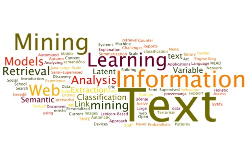

The aim of this project was to:
Transform text input into tokens and convert those tokens into numeric vectors using one-hot encoding and feature hashing
Build basic text-processing models using recurrent neural networks (RNN)
Understand how word embeddings such as Word2Vec can help improve the performance of text-processing models
Click here to see the Project